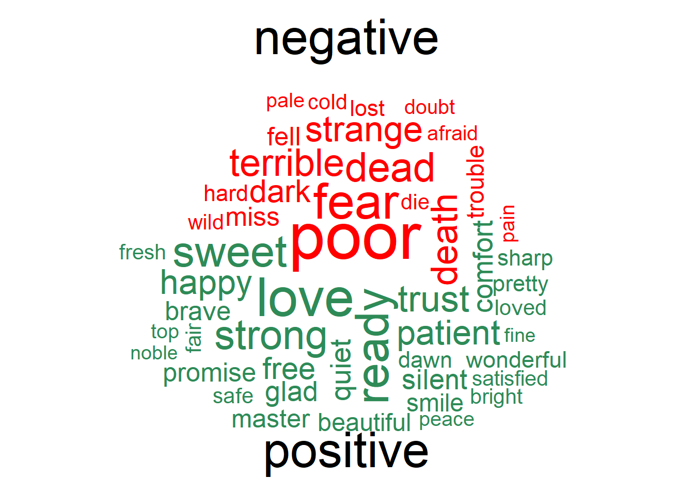

library(tidyverse)
library(tidytext)
library(wordcloud)
library(textdata)
library(reshape2)
# devtools::install_github("ropensci/gutenbergr")
library(gutenbergr)Аналіз тексту
Підключення пакетів
Завантаження даних
gutenberg_metadata %>%
count(author, sort = TRUE)# A tibble: 21,227 × 2
author n
<chr> <int>
1 <NA> 4892
2 Various 3798
3 Anonymous 867
4 Shakespeare, William 326
5 Twain, Mark 235
6 Lytton, Edward Bulwer Lytton, Baron 223
7 Ebers, Georg 175
8 Dickens, Charles 172
9 Verne, Jules 169
10 Balzac, Honoré de 151
# … with 21,217 more rowsdracula <- read_delim("https://www.gutenberg.org/files/345/345-0.txt", delim = "\n", col_names = "text")Rows: 10491 Columns: 1
── Column specification ────────────────────────────────────────────────────────
Delimiter: "\001"
chr (1): text
ℹ Use `spec()` to retrieve the full column specification for this data.
ℹ Specify the column types or set `show_col_types = FALSE` to quiet this message.dracula# A tibble: 10,491 × 1
text
<chr>
1 The Project Gutenberg eBook of Dracula, by Bram Stoker
2 This eBook is for the use of anyone anywhere in the United States and
3 most other parts of the world at no cost and with almost no restrictions
4 whatsoever. You may copy it, give it away or re-use it under the terms
5 of the Project Gutenberg License included with this eBook or online at
6 www.gutenberg.org. If you are not located in the United States, you
7 will have to check the laws of the country where you are located before
8 using this eBook.
9 Title: Dracula
10 Author: Bram Stoker
# … with 10,481 more rowsОхайні дані
Приводимо дані до зручного вигляду: видаляємо “стоп-слова” та записуємо кожне слово в окремий рядок.
tidy_dracula <- dracula %>%
unnest_tokens(word, text) %>%
anti_join(stop_words)Joining, by = "word"tidy_dracula# A tibble: 49,992 × 1
word
<chr>
1 project
2 gutenberg
3 ebook
4 dracula
5 bram
6 stoker
7 ebook
8 united
9 world
10 cost
# … with 49,982 more rowsАналіз тексту
Порахуємо кількість унікальних слів
tidy_dracula %>%
count(word, sort = TRUE)# A tibble: 9,300 × 2
word n
<chr> <int>
1 time 390
2 van 323
3 night 310
4 helsing 301
5 dear 224
6 lucy 223
7 day 220
8 hand 210
9 mina 210
10 door 200
# … with 9,290 more rowsВізуалізація тексту
Візуалізація кількості унікальний слів у творі “Дракула”
tidy_dracula %>%
count(word, sort = TRUE) %>%
filter(n > 120) %>%
mutate(word = reorder(word, n)) %>%
ggplot(aes(word, n)) +
geom_col(fill = "darkgreen") +
coord_flip() +
xlab(NULL)Семантичний аналіз тексту
Словники семантичного забарвлення тексту
afinn <- get_sentiments("afinn")
afinn %>%
filter(value == 4) %>%
slice_sample(n = 10)# A tibble: 10 × 2
word value
<chr> <dbl>
1 fun 4
2 rapturous 4
3 triumph 4
4 wowww 4
5 terrific 4
6 exuberant 4
7 wooo 4
8 wonderful 4
9 winning 4
10 lmao 4bing <- get_sentiments("bing")
bing %>%
slice_sample(n = 10)# A tibble: 10 × 2
word sentiment
<chr> <chr>
1 resent negative
2 distrust negative
3 sluggish negative
4 disorient negative
5 snag negative
6 deceit negative
7 uneasy negative
8 fervidly positive
9 appalling negative
10 implausibly negative nrc <- get_sentiments("nrc")
nrc %>%
slice_sample(n = 10)# A tibble: 10 × 2
word sentiment
<chr> <chr>
1 undersized negative
2 evacuate negative
3 resentment disgust
4 horizon anticipation
5 butcher anger
6 good anticipation
7 beautification trust
8 latent negative
9 suicidal anger
10 failure sadness loughran <- get_sentiments("loughran")
loughran %>%
slice_sample(n = 10)# A tibble: 10 × 2
word sentiment
<chr> <chr>
1 frustrated negative
2 mediated litigious
3 dishonoring negative
4 shortfalls negative
5 proration litigious
6 delight positive
7 confusion uncertainty
8 derogation litigious
9 improved positive
10 legalizations litigious tidy_dracula %>%
inner_join(bing) %>%
count(word, sentiment, sort = TRUE)Joining, by = "word"# A tibble: 1,634 × 3
word sentiment n
<chr> <chr> <int>
1 poor negative 193
2 fear negative 137
3 dead negative 109
4 terrible negative 99
5 death negative 94
6 strange negative 90
7 love positive 84
8 dark negative 77
9 ready positive 71
10 sweet positive 66
# … with 1,624 more rowsХмара слів за словником “BING”
tidy_dracula %>%
inner_join(bing) %>%
count(word, sentiment, sort = TRUE) %>%
acast(word ~ sentiment, value.var = "n", fill = 0) %>%
comparison.cloud(color = c("red", "seagreen"),
max.words = 50,
title.bg.colors = "white")Joining, by = "word"
Хмара слів за словником “loughran”
tidy_dracula %>%
inner_join(loughran) %>%
count(word, sentiment, sort = TRUE) %>%
acast(word ~ sentiment, value.var = "n", fill = 0) %>%
comparison.cloud(color = c("blue", "seagreen3", "red", "orange", "grey"),
max.words = 100,
title.bg.colors = "white")Joining, by = "word"Візуалізація за словником “BING”
sentiment_dracula_bing <- tidy_dracula %>%
inner_join(bing) %>%
count(word, sentiment, sort = TRUE) %>%
ungroup()Joining, by = "word"sentiment_dracula_bing# A tibble: 1,634 × 3
word sentiment n
<chr> <chr> <int>
1 poor negative 193
2 fear negative 137
3 dead negative 109
4 terrible negative 99
5 death negative 94
6 strange negative 90
7 love positive 84
8 dark negative 77
9 ready positive 71
10 sweet positive 66
# … with 1,624 more rowssentiment_dracula_bing %>%
group_by(sentiment) %>%
top_n(10) %>%
ungroup() %>%
mutate(word = reorder(word, n)) %>%
ggplot(aes(word, n, fill = sentiment)) +
geom_col(show.legend = FALSE) +
coord_flip() +
labs(
y = "Частота на семантикою",
x = NULL
)Selecting by nsentiment_dracula_bing %>%
group_by(sentiment) %>%
top_n(10) %>%
ungroup() %>%
mutate(word = reorder(word, n)) %>%
ggplot(aes(word, n, fill = sentiment)) +
geom_col(show.legend = FALSE) +
facet_wrap(~ sentiment, scales = "free_y") +
coord_flip() +
labs(
y = "Частота на семантикою",
x = NULL
)Selecting by nВізуалізація за словником “NRC”
sentiment_dracula_nrc <- tidy_dracula %>%
inner_join(nrc) %>%
count(word, sentiment, sort = TRUE) %>%
ungroup()Joining, by = "word"sentiment_dracula_nrc# A tibble: 4,967 × 3
word sentiment n
<chr> <chr> <int>
1 time anticipation 390
2 dear positive 224
3 friend joy 184
4 friend positive 184
5 friend trust 184
6 professor positive 156
7 professor trust 156
8 found joy 155
9 found positive 155
10 found trust 155
# … with 4,957 more rowssentiment_dracula_nrc %>%
group_by(sentiment) %>%
top_n(10) %>%
ungroup() %>%
mutate(word = reorder(word, n)) %>%
ggplot(aes(word, n, fill = sentiment)) +
geom_col(show.legend = FALSE) +
facet_wrap(~ sentiment, scales = "free_y") +
coord_flip() +
labs(
y = "Частота на семантикою",
x = NULL
)Selecting by n